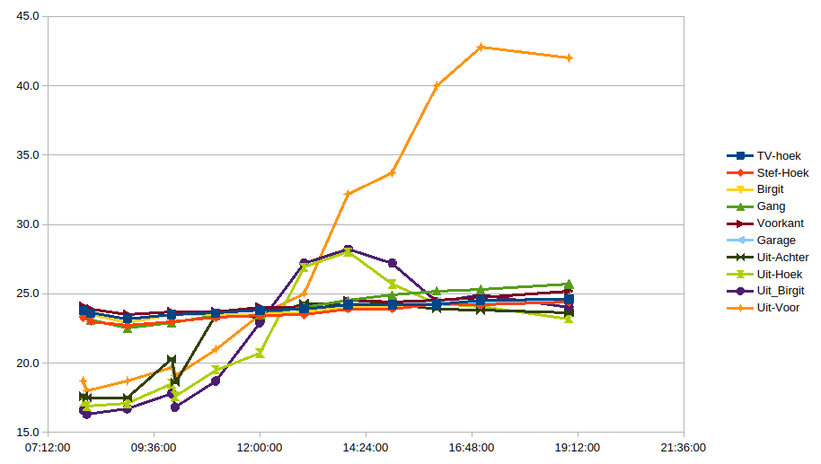
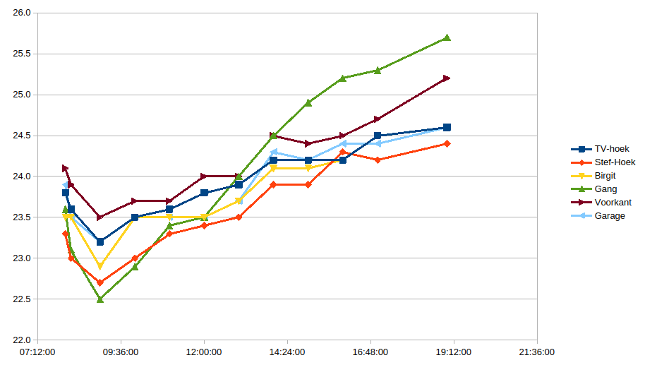

Natte Muren.html
- De Binnentemperaturen stijgen licht, terwijl zeker in de eerste paar uren, de buitentemperaturen lager zijn dan de binnen temperaturen (2 personen + 2 computers).
- In de buiten temperaturen (Uit-...) zien we even na 10:00 een forse daling, Waarschijnlijk is dat de afkoeling door het koude water.
- De buitentemperatuur aan achter en zijkant stijgen rond 12 uur vanweg de directe zoninstraling. Zodra de zon weg is, zakt deze temperatuur ook weer.
- De buitentemperatuur aan de voorzijde blijft lang stijgen, daar staat ook heel lang de zon op.

- De binnentemperaturen zien we aan het begin dalen (buiten is het nog koud, deuren en ramen open)
- Alle curven stijgen licht, vermoedelijk grotendeels door de interne warmteproductie van 350 tot 400 Watt
- De garagemuur zou wel eens een goede representatie van de ruimtetemperatuur kunnen zijn. In dat geval hebben we 1.25 graad Celsius stijging in 10 uur tijd.
- De gang temperatuur stijgt harder, want de hal is een extreem warme plaats
- De voorkant schiet aan het einde ook een beetje omhoog, dat is misschien toch een gevolg van de buitentemperatuur

https://www.tugraz.at/news/artikel/kuehlende-keramikwand